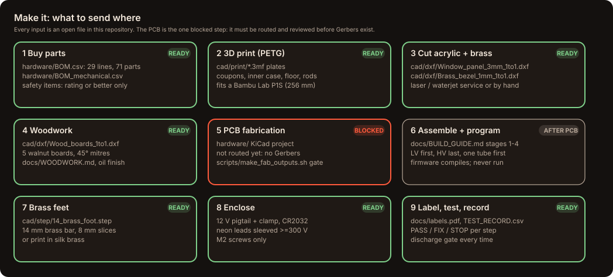
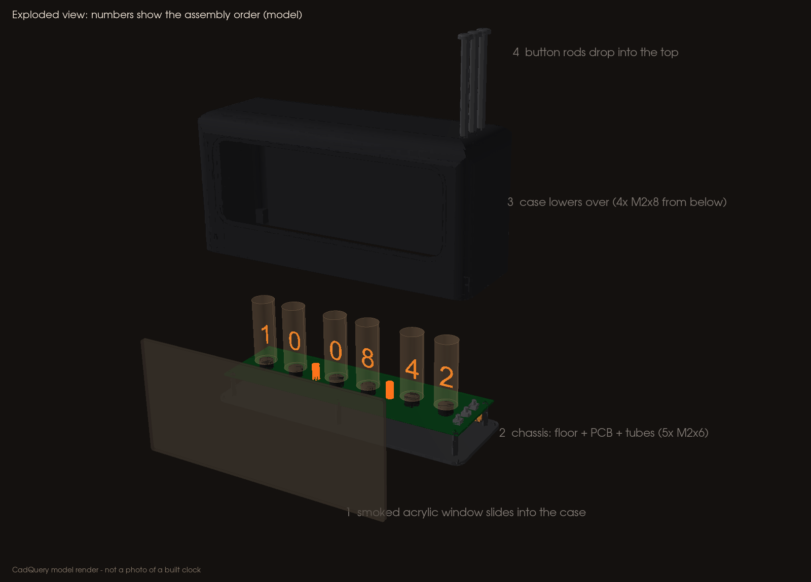
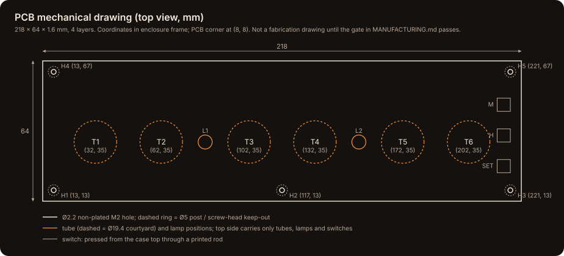
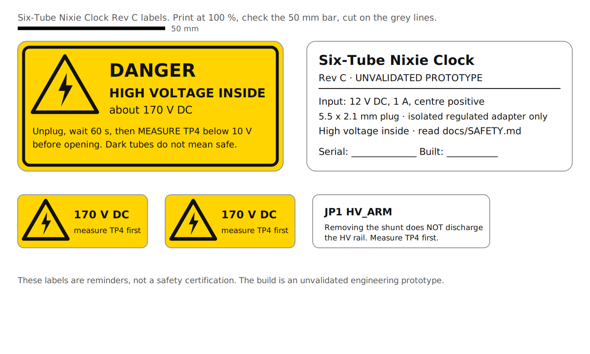

Manufacturing package (Rev C)
Everything needed to make a Rev C clock from open files, in the order you would do it. One step is blocked: the printed circuit board (PCB) has not been routed yet, so there are no Gerber files. Everything else can be made today.

| Process | Files | Status |
|---|---|---|
| Buy parts | hardware/BOM.csv (electrical, 29 lines, 71 parts) · hardware/BOM_mechanical.csv · readable version: BOM.md |
Ready |
| 3D print | cad/print/*.3mf plates, or single parts in cad/stl/ and cad/3mf/ · PRINTING.md |
Ready (fit unverified: print coupons first) |
| Laser cut | cad/Window_panel_3mm_1to1.dxf, 3 mm smoked (or clear) cast acrylic, 206 × 92.8 mm |
Ready |
| PCB fabrication | hardware/ KiCad project → scripts/make_fab_outputs.sh |
Blocked: board not routed; release gate below |
| PCB assembly | BUILD_GUIDE.md Stages 1–4, hardware/COMPONENT_PLACEMENT.csv |
Waits for the PCB |
| Wiring | Section 4 below, WIRING.md | Ready |
| Firmware | firmware/Nixie_RevC/build/Nixie_RevC.hex or the .ino |
Compiles (never run on a board) |
| Labels | docs/labels.pdf (print at 100 %) |
Ready |
| Test and record | hardware/TEST_RECORD.csv, VALIDATION.md |
Ready |
1. Buy parts
- Use
hardware/BOM.csv. Thespeccolumn is the requirement;substitutionsays when a generic part is fine. Lines markedsafety_critical = yesmust be bought at the stated rating or better: the 1 W anode and lamp resistors, the ≥250 V high-voltage capacitor (CHV), the ≥200 V bleeder and sense resistors, the fuse, the P-channel transistors, the HV5522 drivers and the HV module. hardware/BOM_mechanical.csvlists the alarm-clock case, fasteners and off-board items (one set: 4 × M2 × 8, 7 × M2 × 6).- Buy integrated circuits from authorised distributors; buy tubes from sellers who test them.
2. 3D print and laser cut
- Bambu Lab P1S (256 mm cube) or any printer with at least 240 × 85 mm of bed and 115 mm of height: the case is 234 × 80 × 112 mm.
- PETG, 0.20 mm layers, 4 walls, 5 top and bottom layers, 20–25 % infill. Only the case needs supports (automatic tree supports, inside under the roof and in the window opening). Print the button rods in the case colour.
- Print
plate_0_fit_coupons.3mffirst and check it against an acrylic offcut, a button rod and M2 screws before printing anything large. - Acrylic: cut the DXF at 1:1 in millimetres from 3 mm cast acrylic, smoked grey for the classic look; confirm 206 × 92.8 mm in the laser software first.

3. PCB fabrication (blocked until the release gate passes)
What exists now
- Generated schematic (root sheet plus two driver sheets), checked net by net against
NET_MAP.csvwith KiCad's own netlist export. - A placement-only board: 218 × 64 mm outline, five M2 holes and component courtyards, with 0 violations in KiCad's own design rules check (DRC). It has no copper and no real footprints.

What must happen before anyone orders boards
- Replace the placeholder footprints with real ones, including the IN-14 lead pattern measured from your tubes and the NCH8200HV outline measured from your module.
- Run KiCad's electrical rules check (ERC) on a readable schematic.
- Route four layers with
hardware/Nixie_RevC.kicad_druand run DRC to 0 violations and 0 unconnected items. - Have an experienced high-voltage reviewer check the layout, then fill in
hardware/REVIEW_SIGNOFF.md. - Run
scripts/make_fab_outputs.sh. It checks all of the above and only then writes Gerbers, Excellon drill files, a placement file and the BOM intofab/, zipped with a SHA-256 checksum. Today it stops at step 1 on purpose.
Board specification to send with the files (starting values: confirm with your fab)
| Item | Value |
|---|---|
| Size | 218 × 64 mm, 5 × Ø2.2 mm non-plated M2 holes (see drawing) |
| Layers | 4 |
| Thickness | 1.6 mm FR-4 (glass-epoxy), Tg ≥ 150 °C |
| Copper | 1 oz outer, 0.5 oz inner |
| Finish | ENIG (electroless nickel immersion gold): flat pads suit the 44-lead plastic leaded chip carrier (PLCC-44) drivers |
| Solder mask / silkscreen | Matte black or green / white |
| HV clearance | ≥1.0 mm between HV and low-voltage nets on every layer, ≥0.65 mm HV to HV, ≥2.0 mm HV to board edge (from Nixie_RevC.kicad_dru; check against IPC-2221B) |
| Top side | Only tubes, lamps, switches, the HV_ARM header and test pads TP1–TP4 (along the rear edge, for measuring with the case lifted off) |
| Electrical test | Request 100 % flying-probe test |
4. Wiring harness
| Wire | Spec | Route |
|---|---|---|
| 12 V input | Insulated pigtail, 5.5 × 2.1 mm female, about 150 mm, about 4 mm outer diameter | Rear 4.2 mm hole → floor cradle → cable clamp (part 03, 2 × M2 × 6) → J1 pads |
| Backup cell | Insulated CR2032 holder with leads | J2 pads; stick the holder to the floor away from the HV area |
| Neon lamps | NE-2 leads, sleeved ≥300 V (600 V preferred) over every exposed millimetre | L1, L2 positions |
| Dressing | 2 small cable ties | Keep every low-voltage wire away from PS1, the anode resistors and the tube leads |
5. Assembly
Follow BUILD_GUIDE.md exactly. It is also the assembly procedure: low-voltage parts and the HV-enable switch first (Stage 1), logic and clock bring-up with no HV module fitted (Stage 2), the HV supply under guarded conditions (Stage 3), then one tube before all six (Stage 4). Never skip the discharge gate.
6. Programming
Arduino IDE (integrated development environment): open firmware/Nixie_RevC/Nixie_RevC.ino, board Arduino Nano, processor ATmega328P, Upload.
Or flash the prebuilt image with avrdude (no IDE). Check firmware/Nixie_RevC/build/BUILD_INFO.txt for its SHA-256 first, and follow the USB rules in SAFETY.md:
sudo apt-get install -y avrdude
avrdude -p m328p -c arduino -P /dev/ttyUSB0 -b 115200 -D -U flash:w:firmware/Nixie_RevC/build/Nixie_RevC.hex:i # use -b 57600 for the old bootloader
7. Test, label, record
- Record every unit in a copy of
hardware/TEST_RECORD.csv(one file per serial number). Any STOP result ends the build until it is fixed. - Print
docs/labels.pdfat 100 % on vinyl sticker paper: the HV warning and rating plate go on the underside of the floor, the small 170 V markers inside the case near PS1 and TP4, and the HV_ARM tag next to JP1.

- Fill in VALIDATION.md. Claim only what you measured.
8. Requirements and licence
- Every requirement, what satisfies it and how it is verified: REQUIREMENTS.md.
- Everything in the repository is under the MIT licence. If you would prefer a licence written for hardware that keeps derivatives open, the CERN Open Hardware Licence (CERN-OHL-S) is the usual choice; changing it is the project owner's decision.